Role
Game Design Lead
Owned the rule system: turn structure, energy economy, cardholder rotation, and scoring.
A team can be lectured about collaboration, or it can be handed a system where the only way to win is to collaborate. I designed the mechanics that make “success is earned as a team” a rule, not a slogan.
Game Design Lead
Owned the rule system: turn structure, energy economy, cardholder rotation, and scoring.
Jan–May 2024
One-quarter UW HCDE Directed Research Group
10-person team
Collaborative mechanism design, card system, playtesting, and rulebook production.

Instead of telling students to collaborate, we wanted the rules to make collaboration the only viable way to win.
The course metaphor gave us the bridge from teamwork theory to a playable system. The game needed to reveal those hidden resources, then make exchanging them necessary.
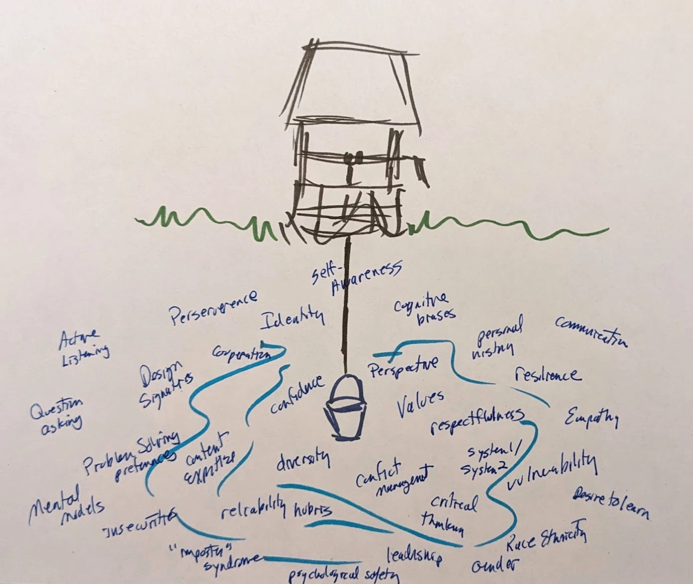
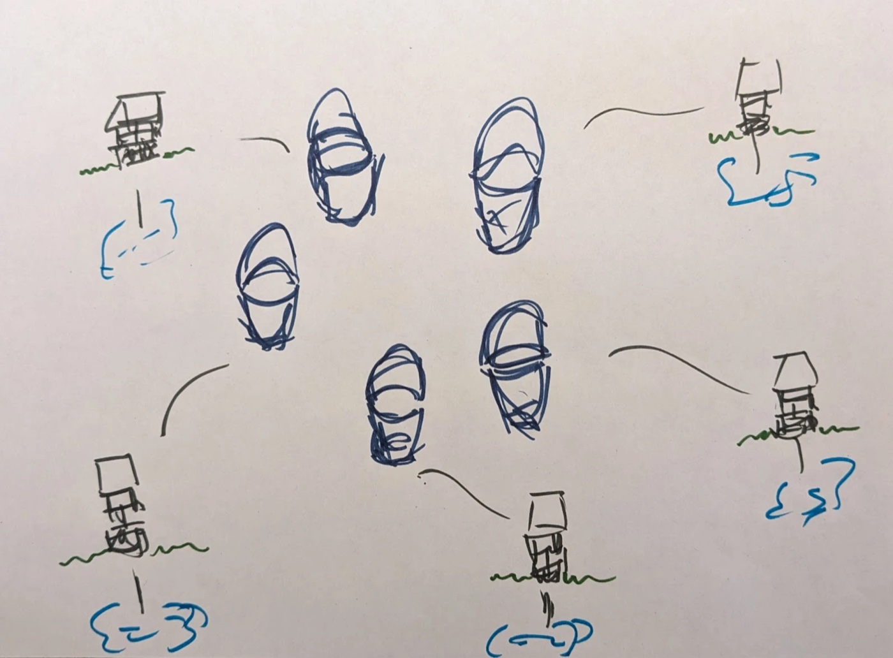
My design question
How can a card game make collaboration the optimal strategy, so players learn teamwork by playing well rather than by being told to cooperate?
I originated the game concept and co-designed the cards, then led printing, classroom testing, and iteration across three versions.
A complete physical teaching kit: the final card deck, card box, and visual rulebook. Played in class, it can be run independently to teach teamwork principles.
The key move was separating what one player holds from what the whole team can create.
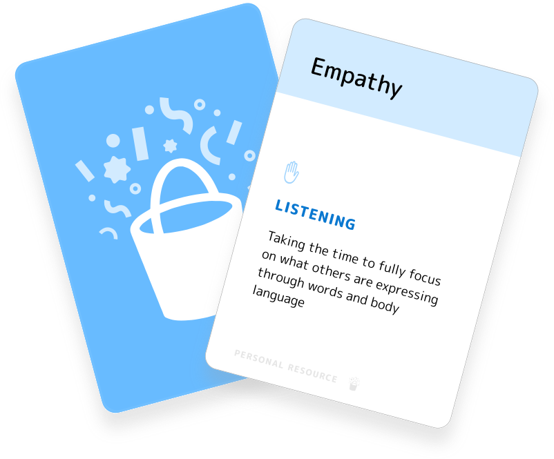
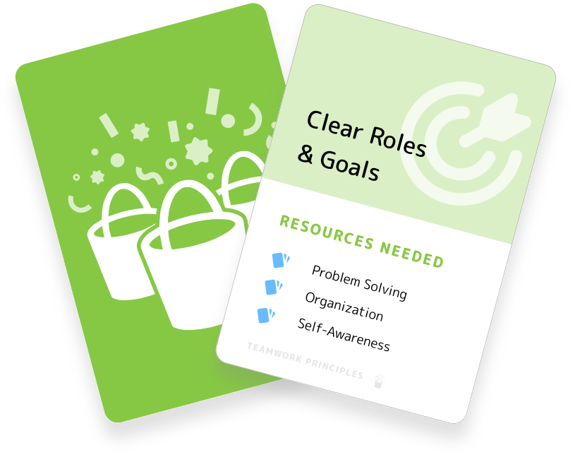
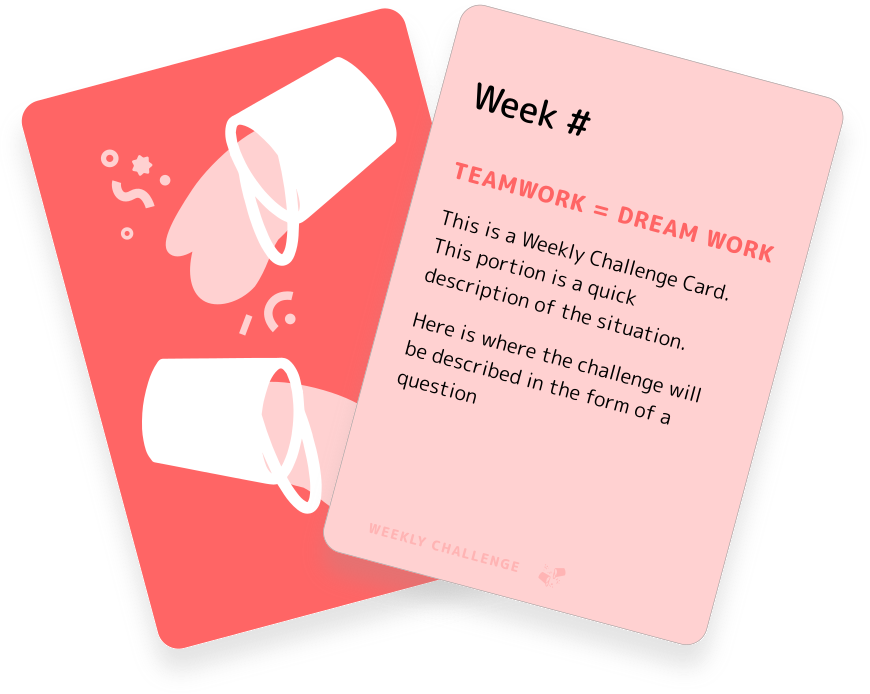

Every action spends energy, so no player can solve everything alone.
Each week advances one tracker; the table wins or loses as a team.
We moved from research and game analysis to a whiteboard economy, then ran the entire loop in sticky notes before designing finished cards.
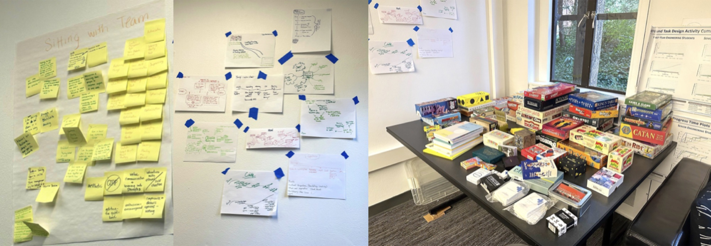
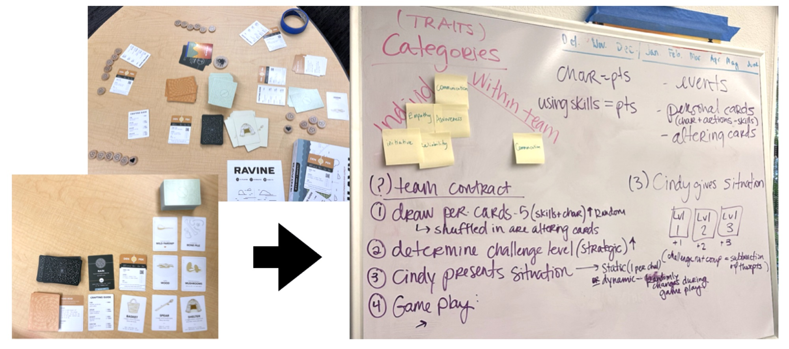
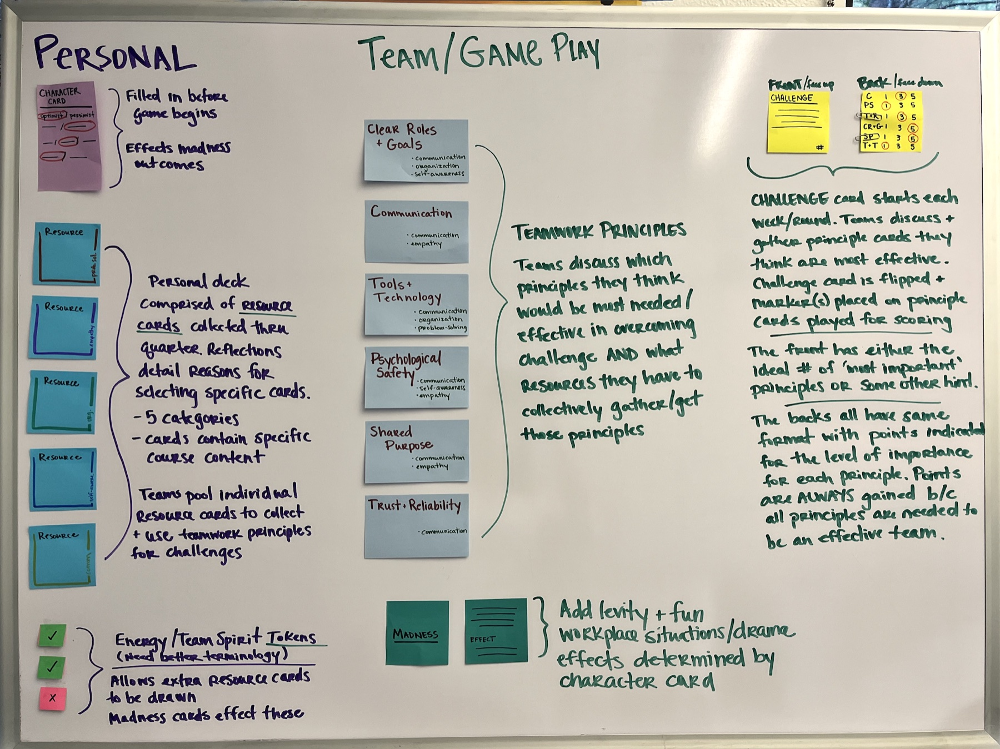
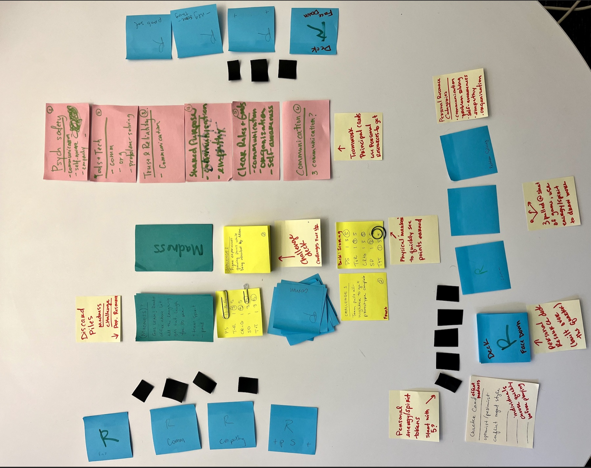
Do not print “work together” on a card. Make individual success impossible without contribution from the table.
The team clears workplace challenges by combining the right resources into Teamwork Principles before energy runs out.
Choose up to three Principles that could solve it.
Pool matching Resources. Every player contributes a card or energy.
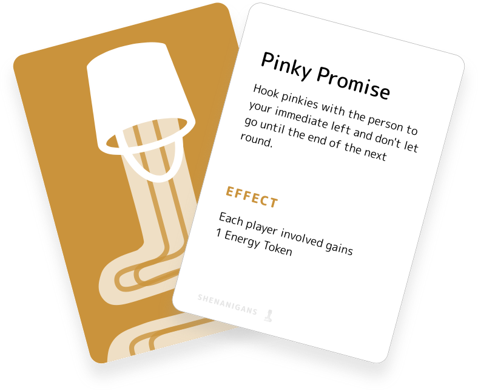
FridayA wildcard may restore energy or disrupt the plan.
Advance the team tracker and pass the Cardholder clockwise.
Resources and Principles carry the concept map into play; Challenges follow Tuckman’s stages; Shenanigans model uncertainty; Setup cards scaffold the first round.
Personal knowledge and traits become something a player can offer.
Origin: individual capacitiesResources combine into an observable team behavior.
Origin: teamwork conditionsEach scenario asks for the behavior needed at that team stage.
Origin: Tuckman’s five stagesUnexpected friction forces the group to adapt together.
Origin: uncertainty and recoveryTuckman’s model sets the difficulty curve: each Challenge asks for the kind of teamwork that phase requires.
I led the card system from early annotations to print-ready components. Type signals hierarchy; color identifies function before a player reads a word.
Friendly enough for a classroom game, structured enough for instructions and repeated scanning.
Each family keeps one saturated action color and one quiet support tint.
#68BBFF#D2EBFF
#FF6565#FFD1D1
#86C844#DBEFC7
#CA933C#F2DFC0
At a glance: blue is what a player holds, green is what the team builds, red is what the team must solve, and ochre is what disrupts the plan.
Three classroom sessions showed us what to preserve, what to rebalance, and where players were getting lost.
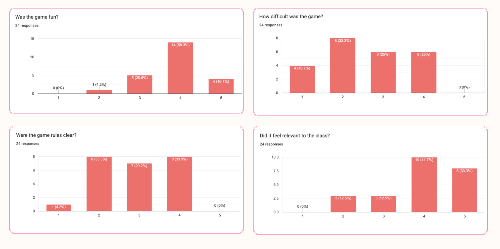
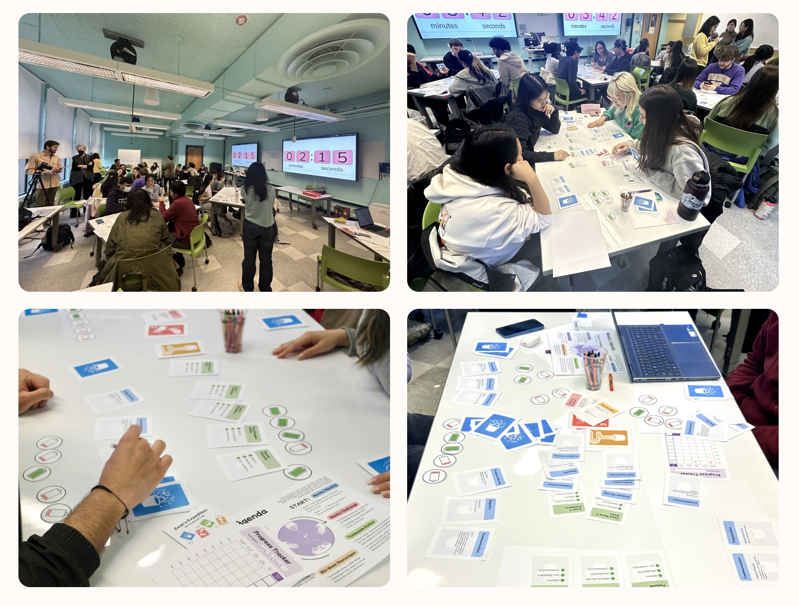
Beta survey averages
24 responses · five-point scaleDifficulty is a calibration measure: 2.6/5 landed inside the target band.
Fun, relevance, and difficulty landed where we wanted them.
2.9/5 rule clarity exposed an onboarding problem, not a broken game economy.
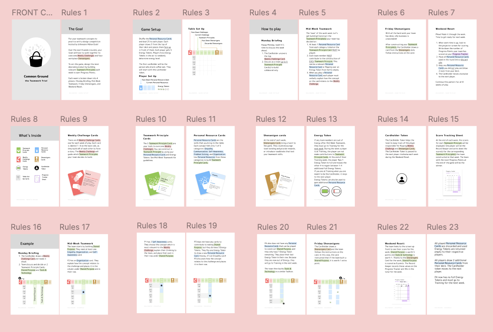
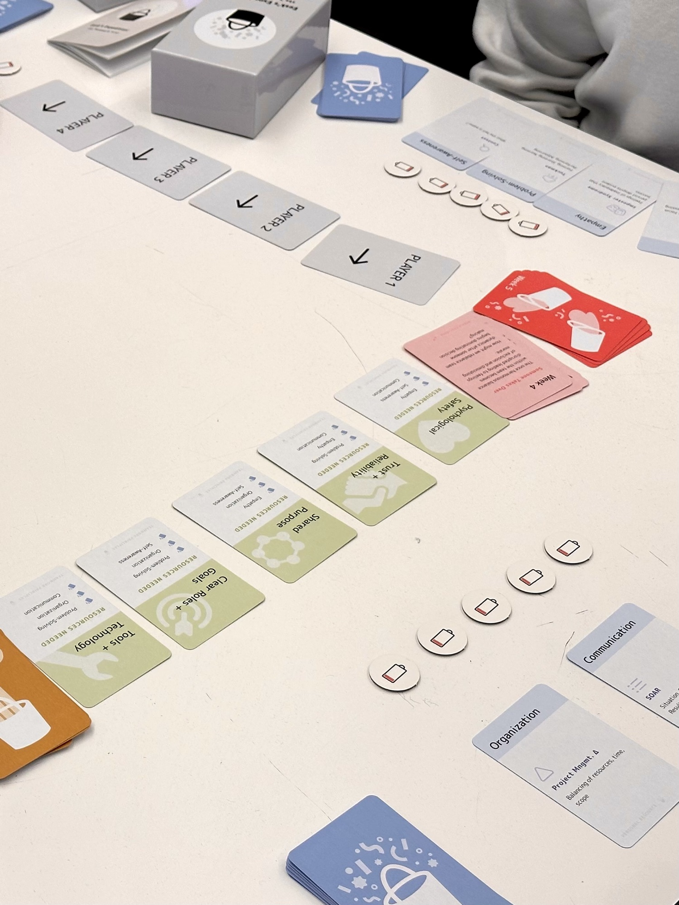
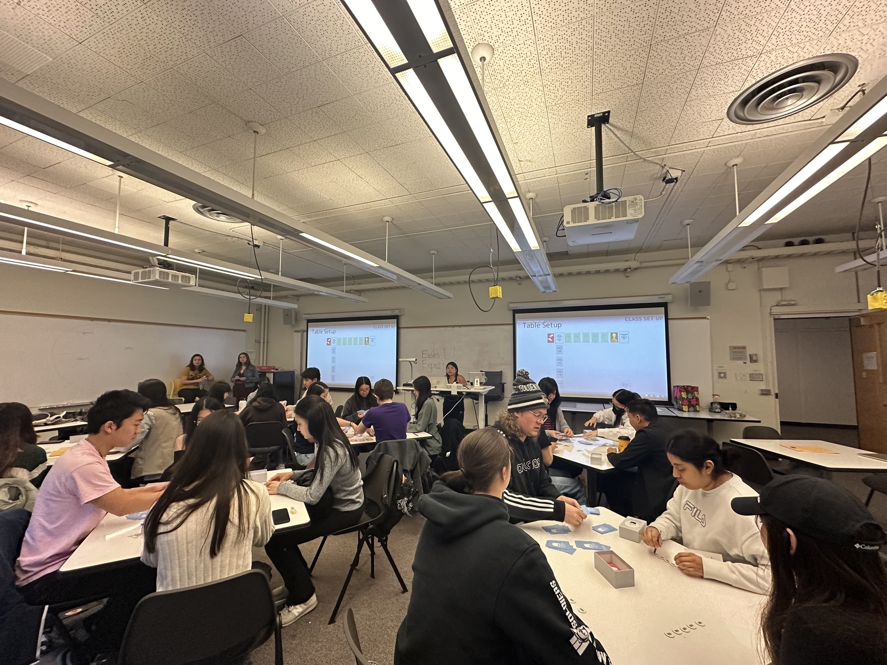
The energy budget and shared score did the teaching. One team lost to a bad Shenanigans draw and still wrote: “Life happens. Good teamwork prevails.” The rules created the lesson.

Constraints teach better than instructions. The interdependence players felt came from what the rules made impossible, not from prompts telling them to cooperate, and the playtest data confirmed that clarity rather than concept was the gap.
I’d A/B different energy budgets and cardholder-rotation rules to find which variant best sustains collaboration and post-game reflection, and prototype a digital version to capture play data at scale.